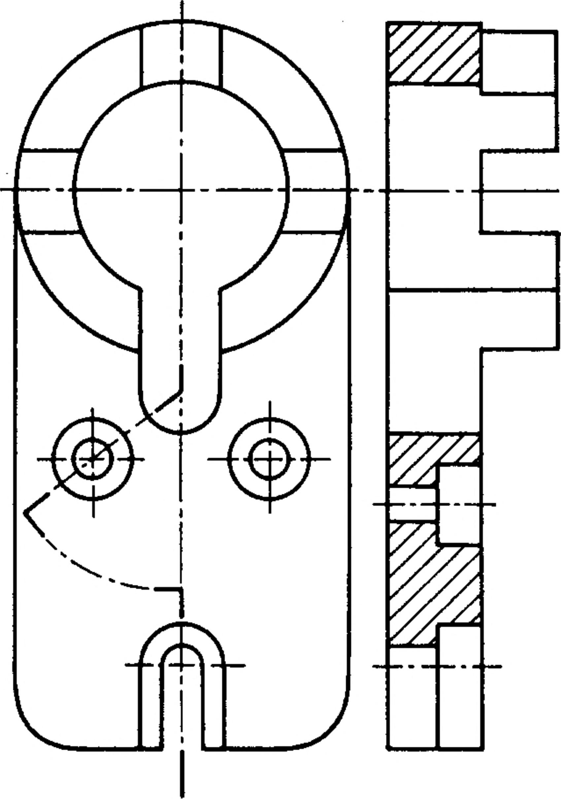
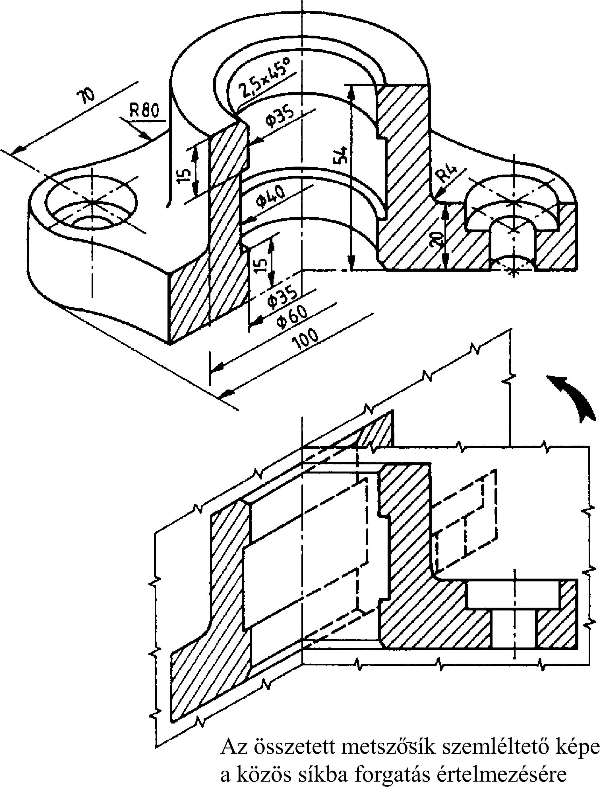
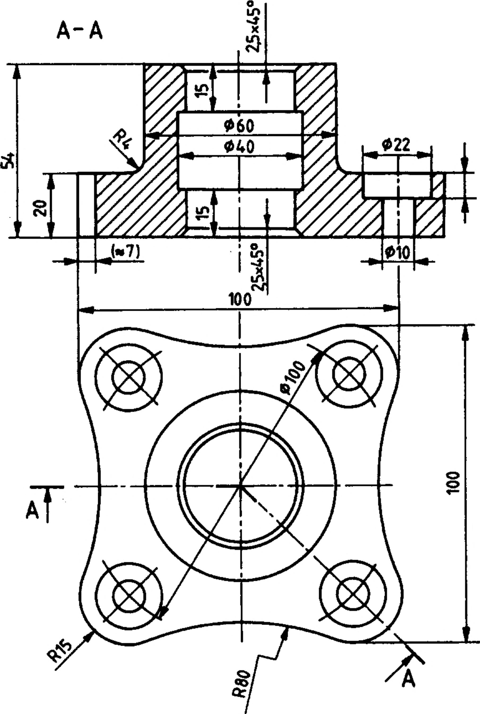

6. Metszeti ábrázolás 6.2.3. A befordított metszet A befordított metszet két egymással szöget bezáró metszősíkkal képzett részmetszetből összetett metszet. A 116. ábrán szemléltető képével és a 117. ábrán vetületeivel ábrázolt munkadarab részmetszeteinek metszősíkjai szögben metszik egymást. Az egymással szöget bezáró metszősíkok egyikét - rajta a metszeti képpel - a közös síkba kell fordítanunk. A közös sík mindig párhuzamos valamelyik képsíkkal. Egy munkadarab metszeti vetületének megrajzolásánál, a ferde metszősík mögött látható nézetelemeket a metszősíkra merőlegesen rávetítjük, ezután forgatjuk a közös síkba, és rajzoljuk meg a metszeti vetületét. A részmetszetek metszősíkjának nyomvonalait vastagított végű, vékony pontvonallal rajzoljuk meg. A metszetképzés irányát nyilazott vonallal jelöljük. A metszősíkot és a metszeti vetületet betűjelzéssel azonosítjuk. Befordított metszet rajzolásánál a metszeti vetület szélesebb is lehet a munkadarab azonos irányból képzett nézeti vetületénél. A befordított lépcsős metszet párhuzamos és egymással szöget bezáró metszősíkokkal képzett részmetszetekből összetett metszet (118. ábra). A befordított lépcsős metszet képzésénél és rajzánál alkalmazzuk a lépcsős- és a befordított- metszetképzés és rajzolás szabályait. I 118. ábra 116. ábra 117. ábra 34
  